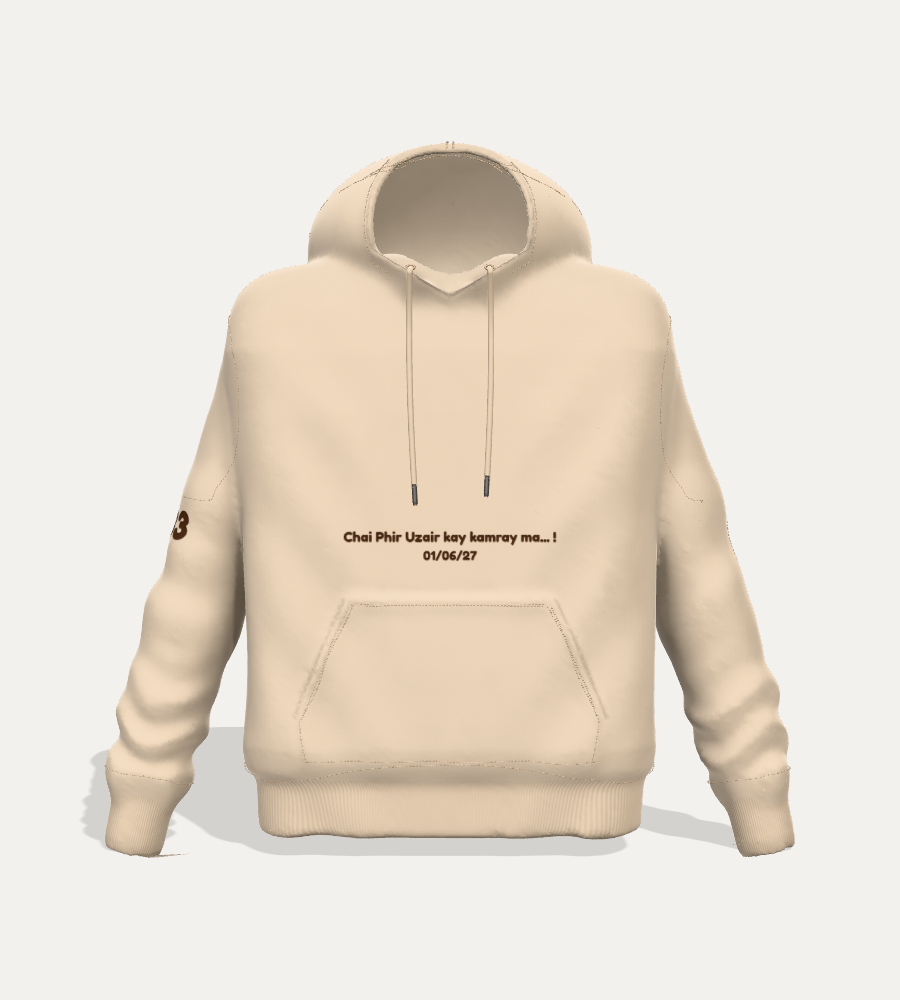
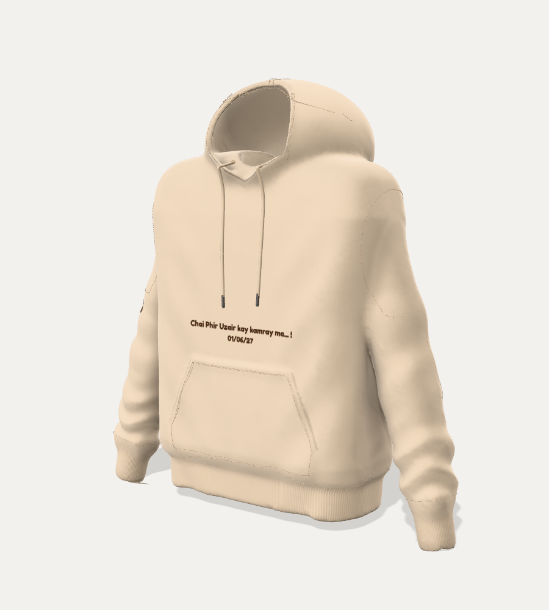
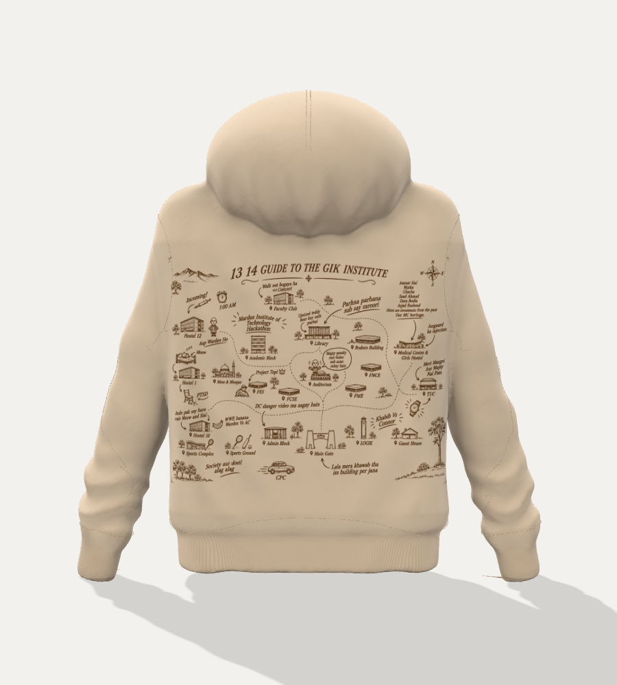
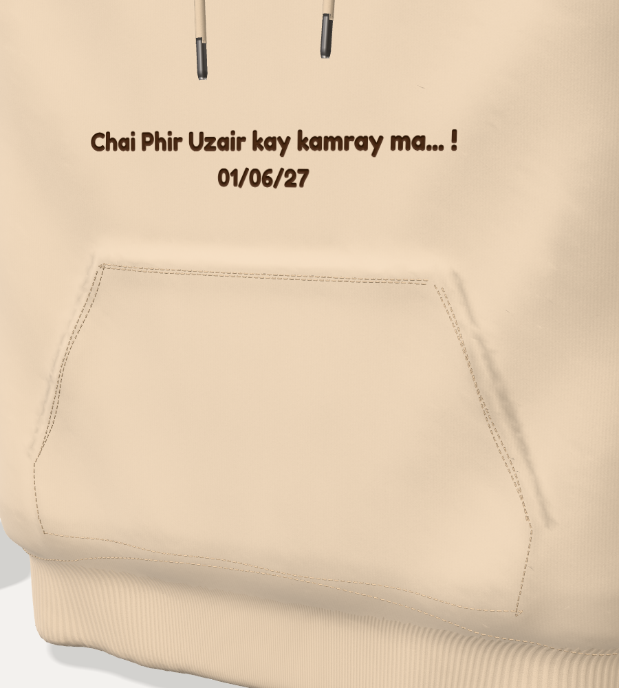
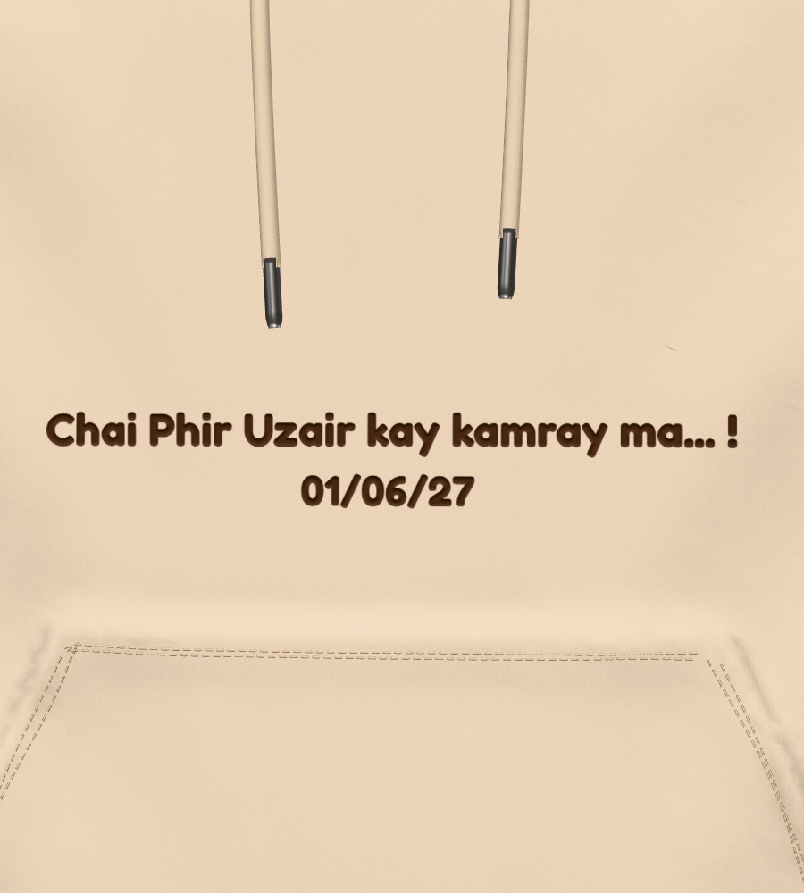
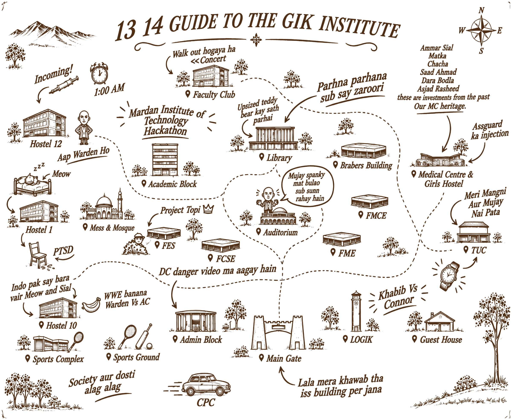
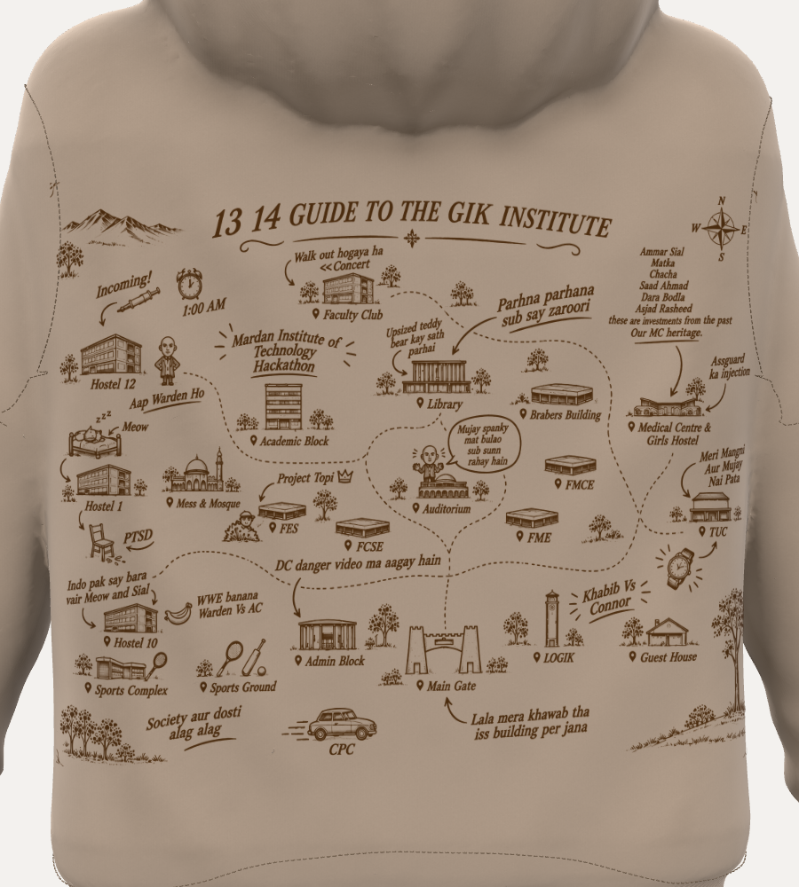
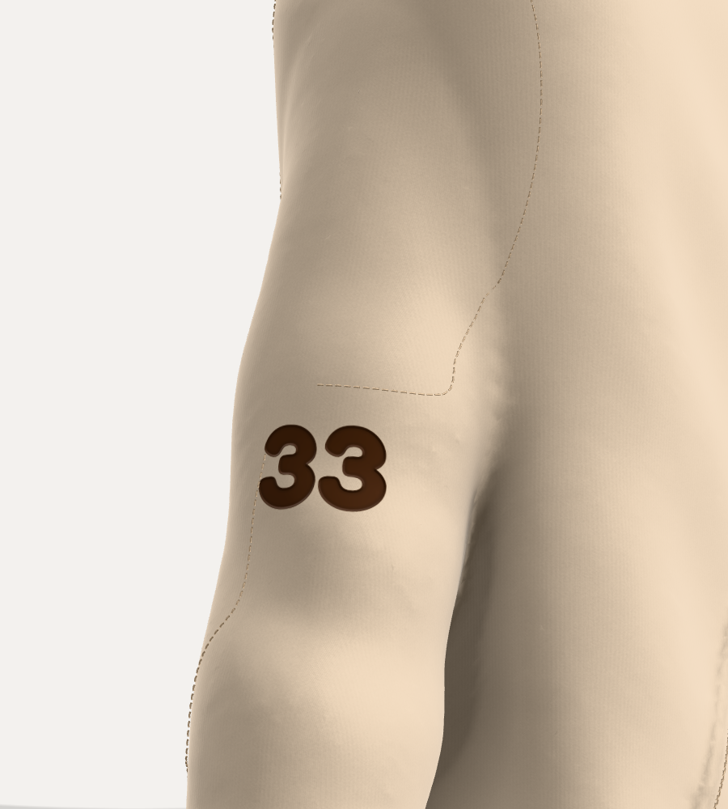
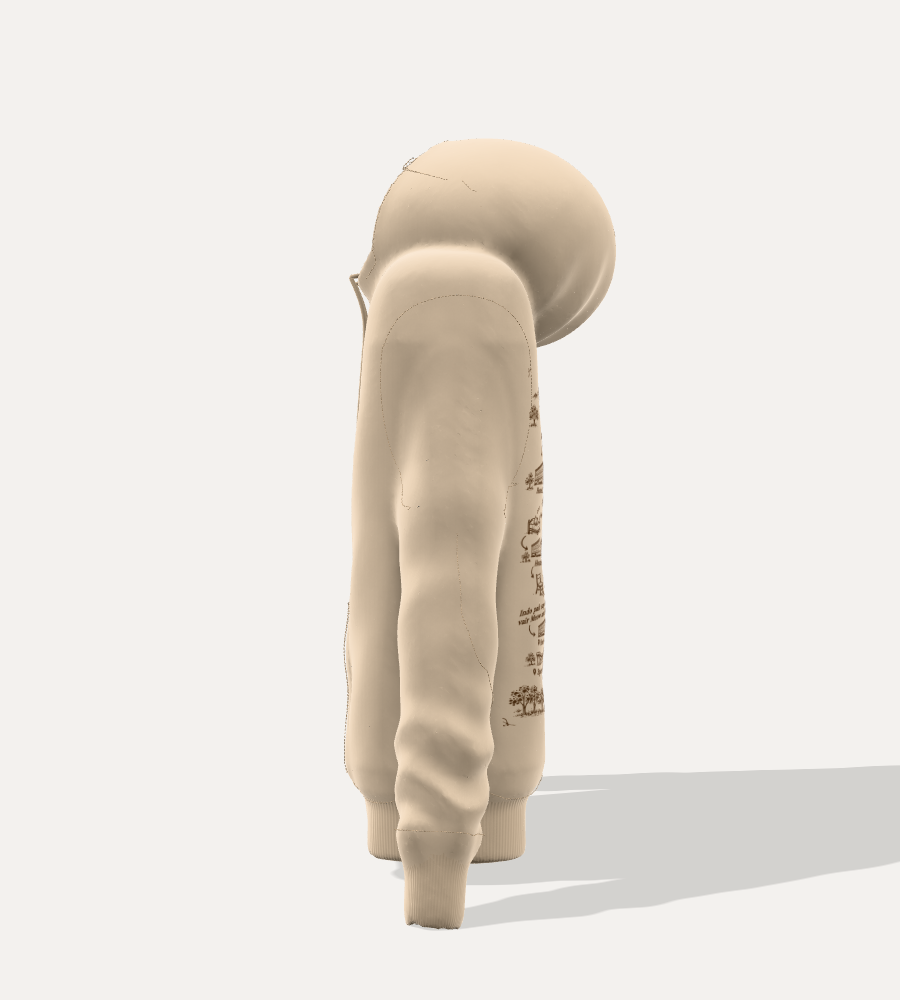

Cream fleece pullover hoodie
with three prints
Front: "Chai Phir Uzair kay kamray ma… !" / "01/06/27".
Right sleeve: "33".
Back: "13 14 Guide to the GIK Institute" campus map.
Interactive 3D model: claude.ai/artifact/3hkLLwRwZE3gaSFJWwWvRm



| Component | Description | Colour |
|---|---|---|
| Body: front & back | Brushed-back cotton fleece, oversized boxy fit | #F2DCC0 cream beige |
| Sleeves ×2 | Drop shoulder, relaxed, gathered into cuff | #F2DCC0 |
| Hood | 2-panel with centre seam, rolled front edge, crossover V at the neck | #F2DCC0 |
| Kangaroo pocket | Patch pocket with slanted hand openings | #F2DCC0 |
| Rib hem & cuffs | 1×1 rib knit | #ECD5B8 (a shade deeper) |
| Draw-cords ×2 | Round cord, about 8 mm, self colour | #E8D1B4 |
| Aglets ×2 | Metal tips, about 2.5 cm | #8E8A86 gunmetal |
| Eyelets ×2 | Embroidered, tonal | #CDB496 |
| Topstitching | Tonal thread, coverstitch / twin-needle | #CDB496 |
| Print ink: back | Water-based screen print, sepia brown | #4E2E14 |
| Print ink: front & sleeve | Water-based screen print, dark chocolate | #43220A |
Colours are screen (hex) values. Please match them against your fabric and ink swatches and send a lab-dip / strike-off for approval.

| Item | Spec |
|---|---|
| Text | Chai Phir Uzair kay kamray ma... ! 01/06/27 |
| Font | Fredoka Bold, thick rounded block letters (free, SIL Open Font License; file supplied). Second line set at 92% of the first. |
| Technique | Engraved look: letters debossed about 1.4 mm into the fleece with ink fill. Confirm with the maker; flat screen print from the same file is the fallback. |
| Print size | 29.8 × 4.1 cm (first line 30 cm wide) |
| Ink | #43220A, 1 colour |
| Placement | Centred on the front. Top of the text about 40 cm below the high point of the shoulder (HPS), just under the draw-cord tips and about 5 cm above the pocket's top edge. |


| Item | Spec |
|---|---|
| Artwork | "13 14 Guide to the GIK Institute" campus map. Paper background removed: ink only, fabric shows through. |
| Print size | 58 × 47.5 cm |
| Ink | #4E2E14, 1 colour |
| Placement | Centred on the back. Top edge about 18 cm below HPS, just under the hood; bottom edge about 19 cm above the hem. |
The artwork was supplied at 1448 px wide and is enlarged to 300 DPI at print size. Fine text such as the name list will be softer than vector art; if the original high-resolution or vector artwork exists, print from that instead.

| Item | Spec |
|---|---|
| Text | 33 |
| Font | Fredoka Bold (same as the front) |
| Technique | Engraved look, same as the front: debossed with ink fill |
| Print size | 6.7 × 4.4 cm (digits 4.4 cm tall) |
| Ink | #43220A, 1 colour |
| Sleeve | Wearer's right sleeve, i.e. on the left when you look at the front of the hoodie |
| Placement | Outer upper arm (bicep/tricep), on the sleeve's outer centre line, turned slightly towards the front. Centre of the print level with the bottom of the armhole seam, just clear of the seam. Digits stay upright. |

| Measurement (from the 3D model) | cm |
|---|---|
| Chest width, laid flat | 60 |
| Body length, HPS to hem | 84 |
| Rib hem height | 8.5 |
| Cuff length | 9.8 |
| Kangaroo pocket: top / bottom width | 28.8 / 42.4 |
| Kangaroo pocket: height | 24.8 |
| Pocket bottom above hem seam | 1.4 |
These are the 3D model's oversized proportions, for reference. Grade to your own size chart, and scale print placements with the size; print sizes can stay fixed.
